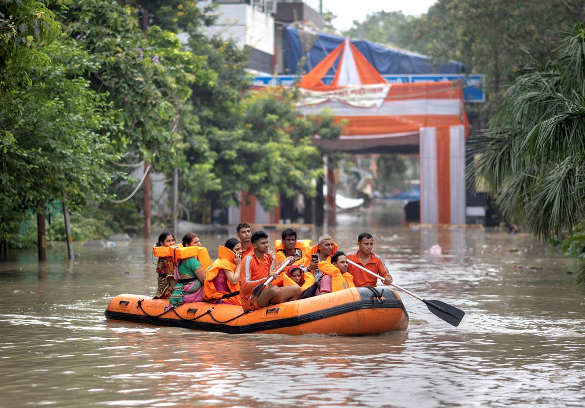

Precautions
Monitor Weather Reports
Stay informed about weather conditions through official weather channels and mobile alerts. Early warning systems are critical in preparing for flood emergencies.
 Learn More
Learn More
Create an Emergency Plan
Have a well-structured emergency plan that includes evacuation routes and emergency contact information. Practice your plan with family members regularly.
Learn MorePrepare an Emergency Kit
Assemble a disaster supply kit that includes food, water, medications, and important documents. Ensure it’s accessible and ready for quick evacuation.
Learn MoreKnow Your Flood Risk
Understand the flood risk in your area. Consult local government resources to assess whether you live in a flood-prone region and the potential risks involved.
 Learn More